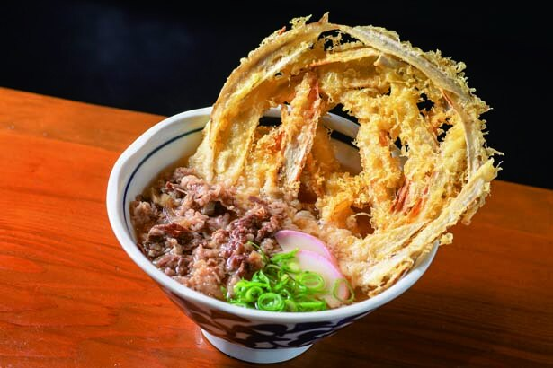
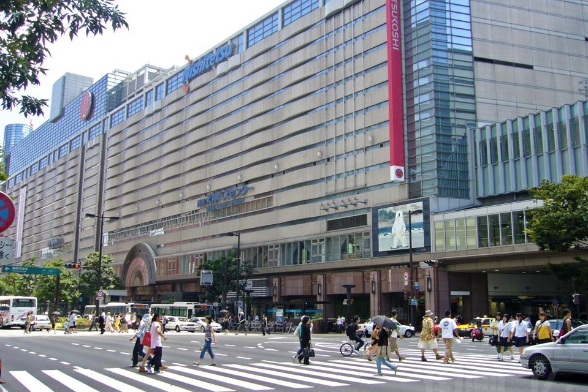
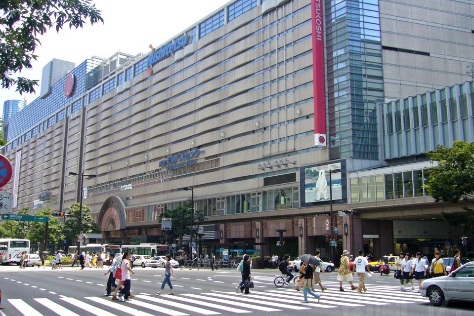
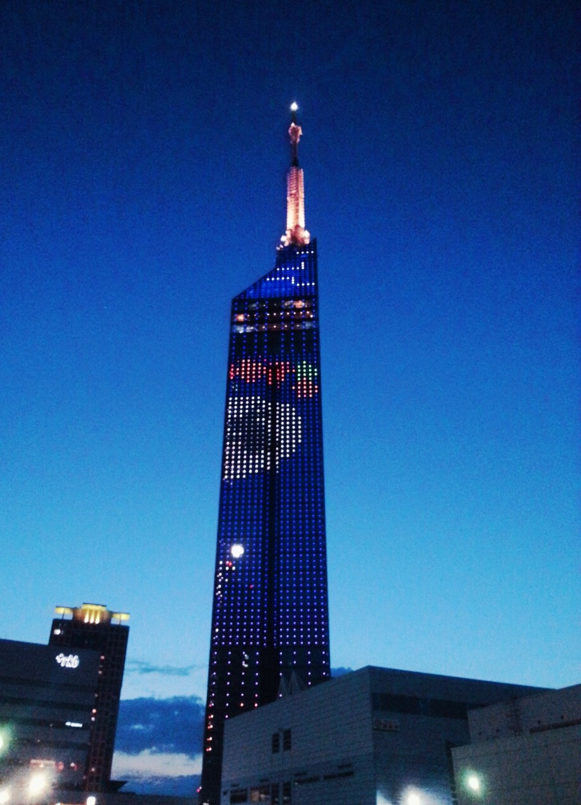
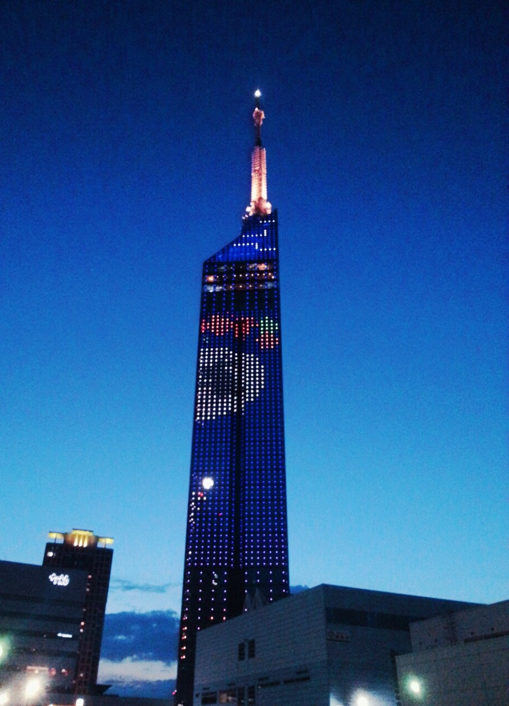
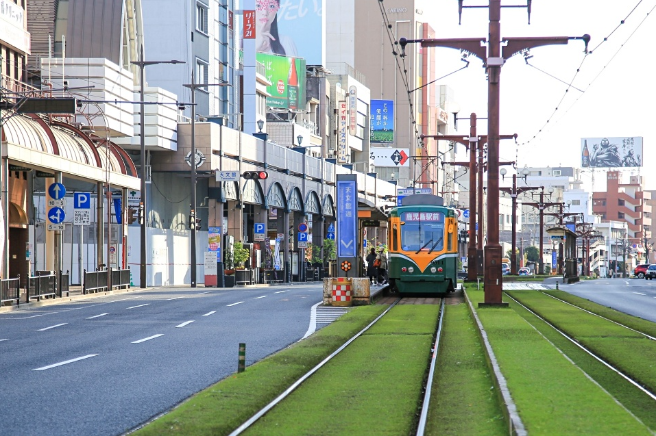
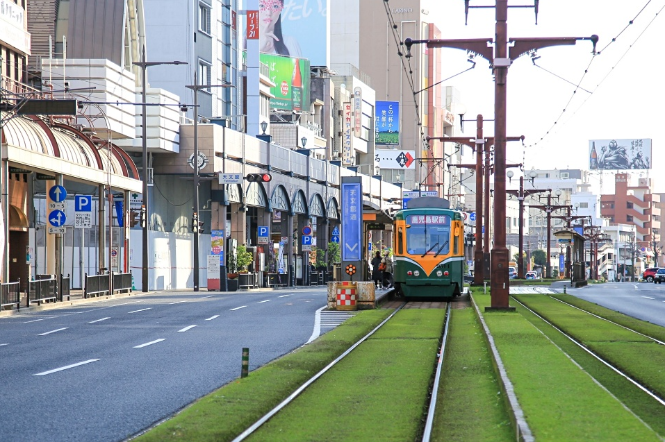

먹을거리
하카다 라멘

일본 대표 메뉴인 라멘. 3대 라면중 하나인 하카타 라멘은 진하게 우려낸 돼지뼈 국물의 돈코츠 라멘이다. 깔끔한 맛의 뿌연 육수에 가늘지만 탄력 있는 면이 특징. 고명으로 올라가는 챠슈(얇게 썬 돼지고기)가 사르르 녹는다. 유명 체인으로는 이치란(一蘭),잇푸도(一風堂)가 있다.
모츠나베

일본식 곱창전골. 소의 내장(모츠)을 넣어 만든 나베 요리. 곱창과 부추, 양배추 등 채소와 완자를 넣고 간장이나 된장으로 맛을 내 푹 끓여 먹는다. 곱창을 다 먹고 남은 국물에 국수를 말아 먹는 것도 잊지 말자.
미즈타키

후쿠오카 대표 향토요리. 닭고기를 푹 우려낸 국물이 닭곰탕과 비슷한데 샤브샤브처럼 먹는 게 특이하다. 미즈타키는 먼저 국물에 소금을 조금만 넣어 깊은 맛을 충분히 즐긴 다음, 닭고기와 양배추를 소스와 함께 먹는다. 마지막으로 밥을 넣고 끓여 죽으로 즐긴다.
고보텐 우동
넙적하고 부드러운 면에 우엉튀김(고보텐)을 얻은 후쿠오카 대표 우동. 일본 우동의 발상지답게 가츠오부시와 해산물로 맛을 낸 국물이 일품.
후쿠오카 함바그

어쩌면 후쿠오카를 떠올릴때 가장 먼저 생각 나는 메뉴. 서양에서 들어온 햄버그 스테이크를 일본식으로 만든 것이다. 함바그에 동양식으로 밥, 된장국을 곁들여 먹으며, 자신의 취향에 맞게 다양한 소스나 사이드, 토핑을 선택할 수 있어서 좋다. 특정 전문점들은 생 함바그를 개인 돌판에 직접 구워먹는 방식으로 유명하다.
관광지
커낼시티 하카타

쇼핑과 엔터테인먼트를 동시에 즐길 수 있는 복합 상업시설
다양한 브랜드 매장과 레스토랑, 각종 엔터테인먼트 시설이 모여 있는 하카타 지역 대표 복합 상업 시설 매일 분수쇼가 열리는 180m 길이의 운하가 있는 것으로 유명하다.
텐진
 


맛집 탐방과 쇼핑을 함께 즐길 수 있는 번화가
텐진은 후쿠오카 제일의 번화가로 다양한 물품을 파는 가게들과 백화점이 밀집해있다. 또한 지하에는 텐진의 지하를 남북으로 관통하는 텐진지하상가가 있다. 약 590m의 지하상가에 1000여개의 매장이 늘어서있어 쇼핑을 좋아하는 분이라면 강추
다자이후


많은 명소를 구경하며 산책하기 좋은 곳
다자이후에는 학문의 신 '스와가라노 미치자네'를 모시고 있는 텐만구가 있어서 해마다 입시철이 되면 합격을 기원하는 많은 참배객이 합격기원 부적 구입을 위해 모인다. 또 오모테산도에는 많은 가게들이 있어 구경거리도 많아 산책하기 좋다.
"카사노야(かさの家)에서 먹은 '우메가에모찌'와 차가 기억에 남는다."
※추가로 다자이후 산책 티켓은 왕복기차권과 우메가에모찌 교환권을 준다.
후쿠오카 타워
 

후쿠오카의 전망을 한눈에 볼 수 있는 랜드마크 타워
후쿠오카 타워는 시사이드 모모치 해변근처에 있는 높이 234m의 랜드마크이다. 타워 내부의 전망대에서는 끝없이 펼쳐진 하카타 만을 감상할 수 있다.
"버스를 타고 가다 보이는 바다가 아찔했던 기억이있다."
매력적인 근교 도시
벳푸

온천으로 유명한 도시
벳푸에는 지옥 순례라는 독특하고 다양한 색채와 형태의 7개의 온천을 구경할 수 있다. 또 근처에는 식도락과 온천을 즐길 수 있는 온천마을인 유후인이 있다.
쿠마모토


쿠마몬의 고향
쿠마모토 성은 일본 3대성 중 하나로 2016년 무너져 내려 내부관람이 불가능 했으나 최근들어 관람 가능하게 되었다.
또한 주변에 아소산, 쿠로카와온천등 가볼곳도 많아 매력적인곳이다.
유명한 먹거리로는 바사시(馬刺し)말고기 육회가 있다.
가고시마
 


자연환경이 아름다운 그 곳
온화한 날씨에 소도시의 여유로움, 화산이 만들어낸 웅장한 자연경관을 가진 가고시마는 최고의 힐링여행지이다. 또한 야쿠시마는 원령공주의 배경으로 유명하다.